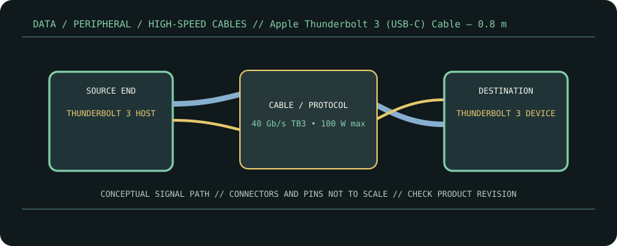

[ CABLE PRODUCT RECORD // APPLE THUNDERBOLT 3 (USB-C) CABLE, 0.8 M ]
Apple Thunderbolt 3 (USB-C) Cable — 0.8 m
USB-C male ↔ USB-C male; Thunderbolt 3 certified cable family. This entry documents the named product model, not a universal guarantee for all cables with the same connector.

CLASSIFICATION: Data, peripheral, and high-speed cables. Model-specific facts below are sourced; negotiated operation remains limited by the connected devices.
Interface and capability
| Product / protocol | Apple Thunderbolt 3 (USB-C) Cable, 0.8 m. Thunderbolt 3, USB 3.1 Gen 2, DisplayPort HBR3, USB Power Delivery. |
|---|---|
| Connector type | USB-C male at both ends. Apple’s cable is identified by the Thunderbolt mark on each connector sleeve; USB-C shape alone does not establish Thunderbolt capability. |
| Electrical / length limits | 0.8 m assembly; Thunderbolt data up to 40 Gb/s, USB 3.1 Gen 2 up to 10 Gb/s, and up to 100 W charging, as documented by Apple. |
| Revision-specific compatibility | Connects Thunderbolt 3 hosts and peripherals; USB-C fallback depends on the ports and device modes. HBR3 video support is not a promise that every USB-C display mode works on every host. Do not substitute a charge-only USB-C cable. |
Compatibility & handling
- Use for a Thunderbolt 3 link only when both devices expose Thunderbolt 3; USB-C connector fit is not protocol proof.
- The Apple documentation also describes charging up to 100 W. Source and sink negotiate power; the cable does not force that voltage or current.
- Confirm the device-side Thunderbolt/USB-C mode, display support, and any host-specific firmware requirements before deployment.
Sources & further reading
- Apple Support — About the Apple Thunderbolt 3 (USB-C) CableApple’s published data-rate and 100 W charging limits.
- USB-IF — USB Type-C Cable and Connector SpecificationUSB-C connector and cable specification; physical USB-C form does not by itself imply Thunderbolt.
- USB-IF — USB4 Specification v2.0USB4 protocol reference for USB-C interoperability and the distinction between protocol modes.